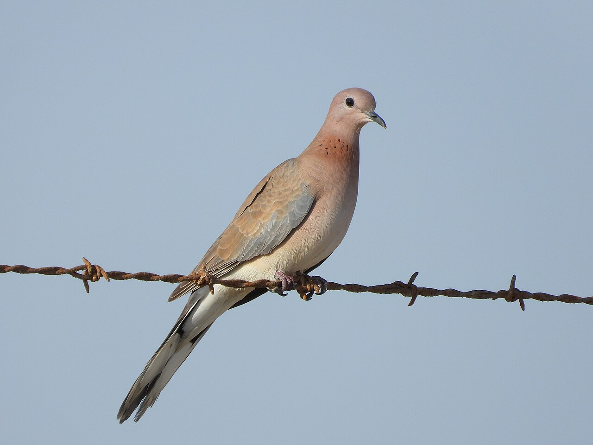

Spilopelia senegalensis — Identification, habitats, reproduction et présence dans le monde arabe
Identité et identification
La Tourterelle maillée, Spilopelia senegalensis, est un petit membre de la famille des Columbidae, dans l’ordre des Columbiformes. Également appelée Tourterelle du Sénégal, elle est familière autour de nombreuses villes, fermes et oasis arabes. Elle mesure environ 25–27 cm, pour une envergure de 40–45 cm, avec une petite tête, un corps élancé et une queue relativement longue.
L’adulte présente une tête et une poitrine brun rosé chaud, un dos plus brun et des zones gris bleuté sur les ailes. Une plage de ponctuations noires sur fond roux au bas de l’avant du cou constitue un bon critère. Le blanc des bords de la queue apparaît nettement lorsque celle-ci s’ouvre. Les sexes sont semblables ; de faibles différences de couleur ne permettent pas de sexer sûrement un oiseau isolé. Les jeunes sont plus ternes, avec une plage ponctuée faible ou absente.
La Tourterelle turque est plus grande et plus pâle, avec un simple demi-collier noir derrière le cou. La Tourterelle des bois possède des plumes du dessus des ailes plus fortement dessinées, à centre sombre, et une plage rayée au cou. La maillée présente une aile plus unie et une queue paraissant plus longue. Mieux vaut combiner ces critères que juger uniquement la taille sur une photographie. Son nom anglais évoque ses roucoulements doux et roulés, sans leur attribuer une émotion humaine.
Milieux, alimentation et comportement
Elle occupe broussailles ouvertes, boisements clairs, vergers, cultures, jardins et agglomérations. En milieu aride, jardins irrigués et oasis procurent nourriture et végétation de nidification. Elle utilise aussi des supports artificiels, notamment rebords abrités et pots de plantes. La présence de petites surfaces favorables compte davantage que la densité des bâtiments seuls.
La nourriture est principalement ramassée au sol. Petites graines et céréales dominent, avec quelques fruits, autres matières végétales et insectes. Les oiseaux marchent en picorant, souvent par deux ou en petits groupes. Des rassemblements plus importants peuvent se former aux sources concentrées de nourriture ou d’eau. Le vol est rapide ; un oiseau surpris peut décoller brusquement. Les couples défendent un territoire de reproduction, même lorsque de nombreux individus vivent dans le même quartier.
Reproduction et cycle de vie
La parade associe roucoulements répétés, mouvements du corps et vols de présentation. Les deux partenaires contribuent à la plate-forme simple de brindilles, généralement dans un arbre ou un buisson, parfois sur un bâtiment. La ponte habituelle est de deux œufs blancs. Les parents se relaient pour incuber et nourrir les jeunes, qui reçoivent d’abord du lait de jabot riche en nutriments. L’incubation dure généralement environ deux semaines ; les jeunes quittent le nid environ deux semaines après l’éclosion, avec des variations entre populations et études. Ils peuvent rester dépendants des adultes après ce départ.
Plusieurs occasions de reproduction peuvent se succéder dans l’année. En Arabie saoudite, la nidification est documentée sur une longue période, avec une forte activité de la fin de l’hiver à l’été. Une étude à Taïf a relevé un début à la mi-février. Les populations égyptiennes et maghrébines ont aussi des saisons de reproduction, mais les conditions locales comptent : un nid marocain contenant des œufs en août montre les limites d’un calendrier trop étroit.
Répartition et saisons régionales
Son vaste domaine couvre une grande partie de l’Afrique et des régions d’Asie occidentale, centrale et méridionale ; les populations d’Australie occidentale sont introduites. L’espèce est principalement sédentaire, avec dispersion et déplacements locaux liés aux conditions, plutôt qu’une migration saisonnière obligatoire à longue distance.
En Arabie, elle niche largement dans les secteurs habités et cultivés favorables, notamment en Arabie saoudite, à Oman et au Koweït. Au Machrek, le Liban possède une population nicheuse résidente établie. L’Égypte abrite des nicheurs résidents dans les zones cultivées et habitées, étudiés notamment dans la province de Charqiya et au Sinaï. Au Maghreb, elle niche dans les vergers, villes et oasis ; son expansion au Maroc et ailleurs en Afrique du Nord est bien documentée.
Écologie et conservation
Principalement granivore, elle constitue aussi une proie dans les réseaux alimentaires terrestres. Son statut mondial est « Préoccupation mineure » LC. Prédation, dérangement ou abandon peuvent faire échouer les nids ; les tirs indiscriminés représentent également une pression documentée. Préserver buissons, vergers et supports tranquilles favorise sa coexistence avec les habitants. Laisser les nids occupés intacts et apprécier les roucoulements à distance.
Références
SEO/BirdLife. Tórtola senegalesa.
Almalki, M. Breeding ecology of the laughing dove in Taif City, Kingdom of Saudi Arabia. Brazilian Journal of Biology 83, 2023.
Boucherit and collaborators. Traditional Orchards and Drivers of Reproductive Performance in a Northern Algerian Population of Laughing Doves. Journal of Biological and Environmental Sciences 14, 2020.
Salama and collaborators. Preliminary Study on Breeding Biology of the Palm Dove at Sharkia Governorate, Egypt. Zagazig Journal of Agricultural Research 51, 2024.
Ramadan-Jaradi and collaborators. Updated Checklist of the Birds of Lebanon. Sandgrouse 42, 2020.
White and collaborators. Resident breeding birds in the St Katherine Protectorate, south Sinai. Sandgrouse 30, 2008.
Go-South. Summer breeding of Laughing Dove at Foum el Oued, 2020.
Mpala Research Centre. Laughing Dove field guide.
Kuwait Birds. Laughing Dove species account.
Photo : The Great Mule of Eupatoria — CC0 1.0.